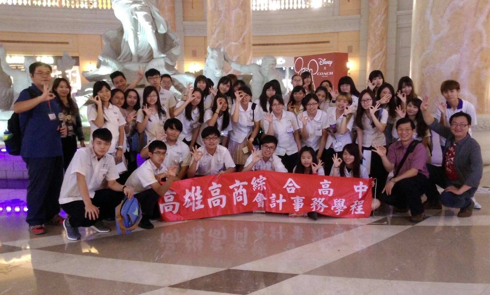

職場體驗
配合教育部國教署技職教育再造計畫，及與高雄市青年職涯中心合作，利用期中考第三天下午或週班會時間赴職場體驗，瞭解公營機構及民營企業之業務運作，並瞭解各產業之現況及發展，我們目前參訪之機構如下：
| 參訪機構名稱 | 參訪內容 |
| 財政部高雄市國稅局 | 認識國稅局之業務運作 認識地方稅和國稅之劃分 瞭解個人綜合所得稅申報實務 |
| 財政部高雄市關務署 | 認識關務署之業務運作 認識進出口貨物之作業流程 |
| 好好國際物流中心 | 認識物流及倉儲產業之作業流程 認識台灣物流及倉儲產業之現況及發展 |
| 連海船舶裝卸公司 | 認識運輸及倉儲產業之作業流程 認識台灣運輸及倉儲產業之現況及發展 |
| 義大世界股份有限公司 | 了解台灣百貨業之發展現況 了解台灣遊樂園服務業之發展現況 了解企業精神 |
| 漢神百貨股份有限公司 | 了解台灣百貨業之發展現況 學習服務業之服務精神 |
 參訪連海船舶裝卸公司
參訪連海船舶裝卸公司

參訪義大世界